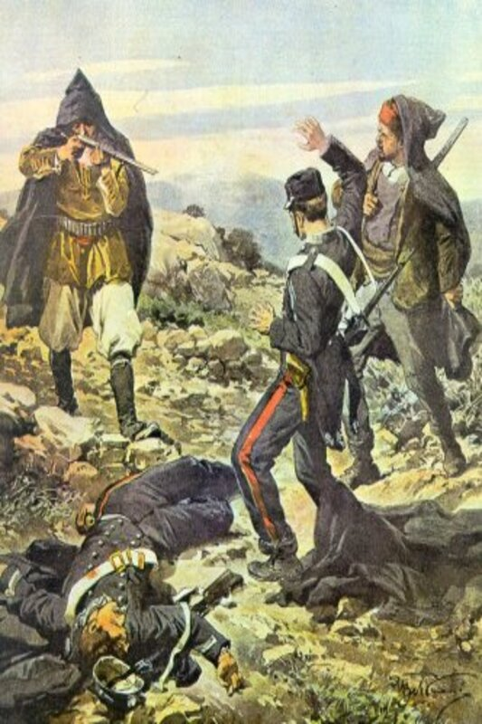

La mafia (/mà·fia/) è un complesso di organizzazioni criminali sorte in Sicilia nel 19° secolo rette dalla legge dell’omertà e strutturate gerarchicamente. È una fenomenologia criminale tipica della parte centro-occidentale della Sicilia, caratterizzata da profondo radicamento nella cultura locale e da connessioni con il potere politico ed economico. Il termine “Mafia”, comparso nel 1863 in una commedia dialettale, venne inizialmente utilizzato per identificare l’organizzazione criminale a stampo mafioso “Cosa Nostra”, che rivestì un ruolo importante nelle vicende politiche dell’Italia.
La Mafia si affermò nel periodo che va dal 1860 al 1876 e nacque come braccio armato della nobiltà feudale per la repressione delle rivendicazioni dei contadini. Nel 1860 Giuseppe Garibaldi, con le sue camicie rosse, invase la Sicilia per annetterla al regno d’Italia, sconfiggendo l’esercito borbonico. La spedizione ebbe un rapido successo poiché lo sbarco innescò una rivolta interna che non lasciò scampo ai Borboni. I siciliani appoggiarono Garibaldi poiché il Parlamento siciliano aveva formalmente abolito il sistema feudale che, però, continuò ancora per oltre un secolo ad essere la struttura socio-economica portante della Sicilia. I baroni, che prima gestivano immensi feudi in quanto vassalli del re, continuarono lo stesso a spadroneggiarvi in quanto proprietari. Questo modello, basato sul latifondo, aveva favorito la miseria della popolazione e la debolezza delle classi sociali diverse da quella possidente, unitamente alla diffusione del particolarismo (la tendenza a curarsi solo dei propri interessi, spesso a danno degli interessi altrui), del familismo (concezione che assolutizza i legami familiari arrivando all'estraniamento dalle responsabilità sociali) e del clientelismo (sistema di relazioni tra persone chesi scambiano favori, spesso a danno di altri). Il popolo siciliano che sperava in un cambiamento sociale con l’annessione al regno d’Italia rimase però deluso. Il risultato fu il peggioramento socio-economico dell’intero Meridione. Il fenomeno mafioso è stato considerato frutto di strutture economico-sociali particolarmente arretrate, di un universo sociale composto da poveri contadini, grandi latifondisti e grandi affittuari, i cosiddetti gabellotti, dai cui ranghi provenivano molti capimafia. Ottenuti in gabella gli ex feudi dei baroni, poco interessati a operarvi trasformazioni produttive, i primi mafiosi li dividevano in piccoli lotti, subaffittandoli ai contadini poveri e ricavando consistenti guadagni. I gabellotti divennero potenti e in assenza dello Stato gestirono da soli il monopolio della violenza creando proprie forze armate, i cosiddetti campieri (“guardie armate” del latifondo).
Parallelamente in Sicilia si sviluppò il fenomeno del brigantaggio che però si distingueva dalla mafia per il fatto che puntava al cambiamento sociale e di conseguenza attentavano alla proprietà privata e alla sicurezza dei baroni, mentre i mafiosi offrivano loro “protezione”. Brigantaggio e mafia erano fenomeni antagonisti che però finirono per entrare in un rapporto simbiotico: i briganti concorrevano a creare tra le vittime una forte domanda di protezione sul territorio e i mafiosi approfittavano di questa circostanza per offrire la loro “sicurezza”. La violenza del mafioso non era assolutamente paragonabile a quella del brigante. Il brigantaggio, fenomeno delle classi subalterne, è stato tollerato per poi essere represso (ciò avvenne quando la borghesia mafiosa andò al potere nel 1876). La mafia invece, espressione delle classi dirigenti, seppe costruire e mantenere un rapporto organico e di convivenza con il potere politico. La mafia in principio adottò una strategia di boicottaggio nei confronti dello Stato, ma ben presto i mafiosi capirono che la politica cercava di usarli come strumento di governo locale: prima la Destra, che li usò per ripristinare l’ordine; poi la Sinistra, quando il governo perse la fiducia dei politici siciliani a causa della proposta di una commissione parlamentare su mafia e banditismo che venne considerata un oltraggio alla Sicilia. Da quel momento la mafia cominciò ad affondare le mani nel mercato romano dei favori elettorali. Da una strategia di boicottaggio si passò ad una forma di sfruttamento dello Stato. Entrambi gli schieramenti politici usarono la mafia come strumento di governo locale.
Il primo caso di mafia riguardò la vicenda del chirurgo Gaspare Galati che, ereditando nel 1872 il fondo Riella (un limoneto), dovette fare i conti con il guardiano della tenuta, Benedetto Carollo. Egli praticava la prima forma di racket della mafia siciliana: rubava limoni affinché le rendite si abbassassero, così avrebbe potuto comprare a basso costo il terreno. Iniziava poi con una serie di intimidazioni nei confronti dell'ex-proprietario, il quale per paura gli concedeva il 25-30% della rendita. Galati decise di licenziare il guardiano, che per vendetta uccise il suo sostituto, ma il chirurgo non cedette alle intimidazioni anche quando gli arrivarono lettere minatorie contro la sua famiglia. La polizia sembrava non voler catturare Carollo e i suoi scagnozzi. La mafia all'epoca agiva sotto la copertura di un’ organizzazione religiosa comandata da Antonino Giammona (boss dell’Uditore, piccolo villaggio dove era situato il fondo Riella). La mafia dell’Uditore basava la sua economia sul racket della protezione dei limoneti. Poteva costringere i proprietari ad assumere i suoi uomini come guardiani e la sua rete di contatti con carrettieri, grossisti e portuali era in grado di minacciare la produzione di un’azienda agricola o di assicurarne l’arrivo sul mercato. Utilizzando la violenza si poteva fare cartello. Una volta assunto il controllo di un fondo, i mafiosi potevano rubare puntando ad un’economia parassitaria o ad acquistarlo ad un prezzo più basso del suo reale valore. Alla fine Galati fuggì a Napoli incapace di ottenere giustizia a causa dell’omertà degli abitanti e della collusione di parte delle istituzioni. La mafia acquisì i caratteri tipici dell’associazione segreta. Usare una sinistra cerimonia di iniziazione e una tavola di leggi la cui prima regola era quella del castigo ai traditori, contribuiva a creare unità interna e senso di appartenenza.